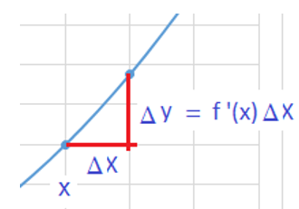
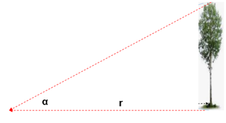
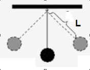

Virheenarviointia derivaatoilla
Contents
Virheenarviointia derivaatoilla¶
Fysiikassa tekniikassa tehdään mittauksia, joihin liittyy aina tietty epävarmuus. Jos muita epävarmuustekijöitä ei ole, mittausvirheenä tai -epätarkkuutena voidaan käyttää mittauksessa käytetyn välineen tarkkuutta. Esim. mitattaessa laudan pituutta metrinmitalla, on mittausvirhe ainakin 0.5 mm, todennäköisesti suurempikin.
Kun mitatuista suureista lasketaan kaavoja käyttäen muita suureita, on tärkeä tietää, miten yksittäisten mittausten virhemarginaaleista voidaan johtaa niistä lasketun lausekkeen virhemarginaaliin. Tässä derivaatalla ja osittaisderivaatoilla on keskeinen merkitys.
Suureen x virhemarginaali voidaan ilmaista kahdella tavalla
absoluuttisena virheenä \(\Delta{x}\)
\(\hspace{1cm}x = (2.15 \pm 0.05)\) mm
suhteellisena virheenä \(\frac {\Delta{x}}{x}\cdot 100\%\)
\(\hspace{1cm}x = 2.15 mm \pm 2.4\%\)
esim. virtamittarin tarkkuus on usein ilmaistu suhteellisen virheen avulla
Yhden muuttujan funktion virhe¶
Yhden muuttujan funktion virhe
Funktion f(x) virhe = derivaatta \(\cdot\) muuttujan virhe
\(\Delta{f}=f'(x)\Delta{x}\)
Derivaatta on käyrän tangentin kulmakerroin.
Kulmakerroin määritellään funktion arvon muutoksen ja muuttujan arvon muutoksen suhteena.

Esim. Laske kuularingin ala virherajoineen, kun halkaisija d =\((213\pm 1)\) cm.
Vastaus: \((3.56\pm 0.04) m^2\)
Ratkaisu
Ringin pinta-ala A = \(\frac{\pi}{4}d^2 = \frac{\pi}{4}{2.13m}^2 = 3.5633 m^2 \)
Alan virhe \(\Delta{A}=A'(d)\Delta{d} =\frac{\pi}{2}d\Delta{d} =\frac{\pi}{2}2.13\cdot0.01 = 0.033 m^2\)
Virhemarginaali on tapana pyöristää aina ylöspäin, jotta suureen arvo olisi varmasti rajojen sisällä.
Vastaus: A = \((3.56\pm 0.04) m^2\)
Monen muuttujan funktion virhe¶
Otetaan esimerkkinä funktio f(x,y,z), jossa on kolme muuttujaa x, y ja z.
Funktiolla on kolme osittaisderivaattaa \(\frac{\partial f}{\partial x},\frac{\partial f}{\partial y}\) ja \( \frac{\partial f}{\partial z}\), jotka antavat funktion muutosnopeudet koordinaattiakselien suunnissa.
Tulot \(\frac{\partial f}{\partial x}\Delta{x}, \frac{\partial f}{\partial y}\Delta{y}\) ja \(\frac{\partial f}{\partial z}\Delta{z}\) edustavat funktion arvon muutoksia, jotka vastaavat muuttujien virheitä \(\Delta{x},\Delta{y}\) ja \(\Delta{z}\).
Osittaisderivaatat voivat olla etumerkiltään positiivisia tai negatiivisia, samoin muuttujien mittausvirheet voivat mittaustilanteessa tapahtua kumpaan suuntaan tahansa. Huonoimmassa tapauksessa kaikki virheet kasautuvat samaan suuntaan. Arvio maksimivirheelle saadaan laskemalla ym. tulojen itseisarvot yhteen.
Monen muuttujan funktion virhe
Monen muuttujan funktion absoluuttisen virheen yläraja:
\(\Delta{f}\le |\frac{\partial f}{\partial x}\Delta{x}|+|\frac{\partial f}{\partial y}\Delta{y}|+ |\frac{\partial f}{\partial z}\Delta{z}|\)
Summan termit edustavat osavirheitä, jotka aiheutuvat muuttujien x,y ja z mittausepävarmuuksista.
Esim. Suorakaiteen muotoisen tontin sivuiksi mitattiin a = \((45.3\pm 0.5)m\) ja b = \((30.5\pm 0.4)m\). Laske tontin ala virherajoineen.
Vastaus: \((1382\pm 34)m^2\)
Ratkaisu
Tontin ala A = a b = \(45.3\cdot 30.5 m^2\) = \(1381.65 m^2\)
Osavirheet:
\(\frac{\partial (ab)}{\partial a}\Delta{a} = b\Delta{a}=30.5\cdot 0.5 m^2 = 15.25 m^2 \)
\(\frac{\partial (ab)}{\partial b}\Delta{b} = a\Delta{b}=45.3\cdot 0.4 m^2 = 18.12 m^2 \)
Alan absol.virhe on osavirheiden summa = \(33.37 m^2\)
Vastaus: Ala on \((1382 \pm 34) m^2\)
Puun korkeuden määrittäminen (liittyy seuraavaan esimerkkiin)
Puun korkeus voidaan määrittää mittaamalla mittauskohdan etäisyys r puun tyvestä, sekä kulma jossa puun latva näkyy mittauskohdassa maan pinnasta. Puun korkeus saadaan tällöin kaavalla \(h = r\hspace{1mm}tan(\alpha)\)

Esim. Puun pituusmäärityksessä saatiin mittaustulokset r = \((25.0\pm 0.5)m\) ja \(\alpha=(42.5\pm0.5)^\circ \). Laske puun korkeus h virherajoineen.
Vastaus: h = \((22.9\pm 0.9)m\)
Ratkaisu
Puun korkeus \(h = r\hspace{1mm}tan(\alpha) = 25m\cdot tan(42.5^\circ) = 22.91 m\)
Osavirheet liittyen etäisyyden ja kulman mittauksiin:
\(\frac{\partial (r\cdot tan\alpha)}{\partial r}\Delta{r} = tan(\alpha)\Delta{r}=tan(42.5^\circ)\hspace{1mm}0.5 m = 0.458 m \)
\(\frac{\partial (r\cdot tan\alpha)}{\partial \alpha}\Delta{\alpha} = \frac {r}{cos(\alpha)^2}\Delta{\alpha}=\frac {25}{cos(42.5)^2}\color{red}{(0.5\frac{\pi}{180})} \color{black}= 0.40\hspace{1mm} m\)
Huom! Kulmien virhemarginaalit on muunnettava radiaaneiksi, kun lasketaan absoluuttista virhettä. Jos näin tehdä, absoluuttinen virhe tulee paljon todellista arvoa suuremmaksi.
Alan absol.virhe on osavirheiden summa = \(0.86 m\)
Vastaus: Puun korkeus h = \((22.9\pm 0.9)m\)
Suhteellisen virheen menetelmä¶
Menetelmä soveltuu vain sellaisille monen muuttujan funktioille, jotka sisältävät muuttujien potensseja, sekä niiden tuloja ja osamääriä , esim.
\(f(x,y,z) = vakio\cdot \frac{x^{n}y^{m}}{z^{k}}\)
Suhteellisen virheen menetelmä
Jos \(f(x,y,z) = vakio\cdot \frac{x^{n}y^{m}}{z^{k}}\), niin funktion f suhteellinen virhe
\(\frac{\Delta{f}}{f}\le n\frac{\Delta{x}}{x}+m\frac{\Delta{y}}{y}+k\frac{\Delta{z}}{z}\)
Funktion f suhteellinen virhe on siten potensseilla painotettu summa muuttujien suhteellisista virheistä.
Kaavan perustelu nojautuu tulon ja osamäärän derivoimissääntöihin, sekä aiemmin esitettyyn absoluuttisen virheen laskutapaan osittaisderivaattojen avulla. Perustelu on pitkähkö ja jätetään se pois tästä esityksestä.
Esim. Sylinterin muotoisen säiliön halkaisija d = \((4.50 \pm 0.05) m\) ja korkeus h = \((2.50 \pm 0.04) m\). Määritä säiliön tilavuus virherajoineen. Käytä suhteellisen virheen menetelmää. Tilavuuden kaava on \(V = \frac{\pi}{4}d^{2}h\)
Vastaus: \((39.8\pm 1.1) m^3\)
Ratkaisu
Tilavuus V = \(\frac{\pi}{4}d^{2}h = \frac{\pi}{4}4.5^{2}2.5 m^3 = 39.76 m^3 \)
Sen suhteellinen virhe \(\frac {\Delta{V}}{V}= 2\frac {\Delta{d}}{d} + \frac {\Delta{h}}{h} \) = \(2\frac {0.05}{4.5} + \frac {0.04}{2.5} = 0.0271 = 2.71\% \)
Tilavuuden absoluuttinen virhe \(\Delta{V}= 2.71\% \cdot 39.76 m^3 = 1.08 m^3\)
Vastaus: V = \((39.8\pm 1.1) m^3\)
Painovoiman kiihtyvyyden määrittämisestä (liittyy seuraavaan esimerkkiin)
Painovoiman kiihtyvyys g voidaan määrittää heilurin avulla mittaamalla heilurin langan pituus L ja edestakaiseen heilahdukseen kulunut aika T.

Putoamiskiihtyvyys saadaan kaavasta \(g = \frac {4\pi^2 L}{T^2}\).
Esim. Opiskelijaryhmä sai fysiikan tunnilla heilahdusajaksi \(T = (2.462\pm 0.017) s\) ja langan pituudeksi \(L = (1.50\pm 0.005) m\). Määritä g virherajoineen.
Vastaus: \(g = (9.77\pm 0.17) m/s^2\)
Ratkaisu
Putoamiskiihtyvyys \(g = \frac {4\pi^2 L}{T^2} = \frac {4\pi^2\cdot 1.50m}{(2.462s)^2} = 9.7696\hspace{1mm} m/s^2 \)
g:n suhteellinen virhe \(\frac {\Delta{g}}{g}= 2\frac {\Delta{T}}{T} + \frac {\Delta{L}}{L} \) = \(2\frac {0.017}{2.462} + \frac {0.005}{1.5} = 0.017 = 1.7\% \)
g:n absoluuttinen virhe \(\Delta{g}= 1.7\% \cdot 9.7696\hspace{1mm}m/s^2 = 0.17\hspace{1mm}m/s^2\)
Vastaus: \(g = (9.77\pm 0.17)\hspace{1mm}m/s^2\)